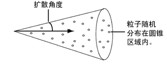

- 弹性(Resilience)
-
设定反弹程度。值为 0 表示粒子碰撞没有反弹。值为 1 表示粒子完全反弹。值介于 0 和 -1 之间表示粒子穿过曲面同时折射出背面。值大于 1 或小于 -1 时，会添加粒子的速度。
- 摩擦力(Friction)
-
设定碰撞粒子在弹离碰撞曲面时其平行于曲面的速度减小或增大的量。
值为 0 意味着粒子不受摩擦力的影响。值为 1 表示粒子完全沿曲面法线反射。如果“弹性”(Resilience)为 0，而“摩擦力”(Friction)为 1，则粒子不反弹。
仅 0 和 1 之间的值对应于自然摩擦力。值超出该范围表示对响应情况进行了扩大。

粒子碰撞事件(Particle Collision Event)
- 设置事件名称(Set Event Name)
-
指定事件名称，从而可以识别事件以便稍后进行编辑。
- 所有碰撞(All Collisions)
-
默认情况下，每次对象中的粒子与几何体碰撞时都会发生事件，无论是否为重复碰撞。如果希望仅在出现特定碰撞时发生事件，例如第二次（重复）碰撞时，请禁用“所有碰撞”(All Collisions)并将“碰撞编号”(Collision Number)设定为所需的值。例如，如果将“碰撞编号”(Collision Number)设定为 2，则每个粒子出现第二次碰撞时发生事件。
- 发射(Emit)
-
启用该选项时，碰撞粒子将发射新的粒子。粒子的数量在“粒子数”(Num particles)框中指定。默认情况下，新粒子以年龄 0 开始，并具有点渲染类型。
- 分割(Split)
-
启用该选项时，碰撞粒子将分割为新的粒子。粒子的数量在“粒子数”(Num particles)框中指定。新粒子将继承分割粒子的当前年龄。默认情况下，新粒子具有“点”(Points)渲染类型。
启用“发射”(Emit)或“分割”(Split)时，可以设定下列属性。
- 随机粒子数(Random # Particles)
-
禁用该选项时，粒子将按照“粒子数”中指定的粒子数进行分割或发射。启用该选项时，将使用一个介于 1 和在“粒子数”中指定的数字之间的随机数。
- 粒子数(Num particles)
-
分割或发射的粒子数。
- 扩散(Spread)
-
设定随机发射粒子的圆锥区域的角度。可以输入介于 0 和 1 之间的值。值为 1 表示 180 度。
 - 目标粒子(Target Particle)
-
指定新粒子使用其属性的粒子对象。（新粒子成为该对象的一部分。）目标粒子可以是现有的粒子对象，也可以是新的粒子对象。如果不指定目标，将指定一个默认名称。若要使用原始粒子对象的渲染类型，请将该对象指定为目标。
- 继承速度(Inherit Velocity)
-
设定在碰撞后新粒子继承原始粒子的速度的程度。
值为 0 表示新粒子不继承原始粒子的速度，并且不反弹。值为 1 表示新粒子继承原始粒子的所有速度，因此粒子会反弹。介于 0 和 1 之间的值可创建相应程度减小的反弹。
注：无论是发射还是分割粒子，都可以使用下列属性执行 MEL 脚本或使粒子消亡。此外，还可以对同一粒子对象应用多个事件以同时创建不同的效果。
- 原始粒子消亡(Original Particle Dies)
-
使粒子在碰撞后消失。
- 事件程序(Event Procedure)
-
可以指定要在发生粒子碰撞时执行的 MEL 程序的名称。不要在名称中使用 .mel 扩展名。要指定的是程序，而不是脚本名称。在发生碰撞事件之前，必须创建 MEL 程序并获取其源代码。